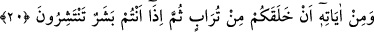
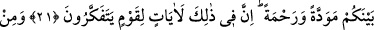
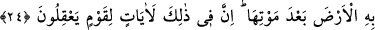
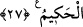

O’NUN VARLIĞININ DELİLLERİ
20. Sizi topraktan yaratması, O’nun (varlığının) delillerindendir. Sonra siz, (her
tarafa) yayılan insanlar oluverdiniz.
21. Kaynaşmanız için size kendi (cinsi)nizden eşler yaratıp aranızda sevgi ve
merhamet peydâ etmesi de O’nun (varlığının) delillerindendir. Doğrusu bunda, iyi
düşünen bir kavim için ibretler vardır.
22. O’nun delillerinden biri de, gökleri ve yeri yaratması, lisanlarınızın ve
renklerinizin değişik olmasıdır. Şüphesiz bunda bilenler için (alınacak) dersler
vardır.
23. Gece olsun gündüz olsun, uyumanız ve Allâh’ın lütfundan (nasibinizi)
aramanız da O’nun (varlığının) delillerindendir. Gerçekten bunda, işiten bir kavim
için ibretler vardır.
24. Yine O’nun delillerindendir ki, size korku ve ümit vermek üzere şimşeği
gösteriyor, gökten su indirip ölümünün ardından arzı onunla diriltiyor. Doğrusu
bunda, aklını kullanan bir kavim için (alınacak) dersler vardır.
25. Göğün ve yerin O’nun buyruğu ile durması da O’nun (varlığının)